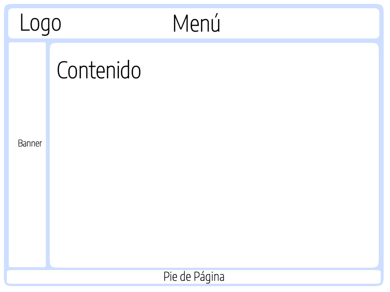

El proposito de este sitio es dar a conocer los coceptos de los Frameworks CSS y el Posicionamiento web
Un framework de CSS es una biblioteca de estilos genéricos que puede ser usada para implementar diseños web y aportan una serie de utilidades Que pueden Ser aprovechadas frecuentemente en los Distintos Diseños Web. Los Desarrolladores Buscan Formas más rapidas de ejecutar diseños atractivos y que tengan un comportamiento adaptativo a los diferentes dispositivos y que simplifique algunas tareas habituales que resultan tediosas con el uso de CSS puro. Es por eso que día a día más desarrolladores utilizan framework de CSS que al igual otros framework , suministran al desarrollador frontend una serie de herramientas rápidas que aceleran enormemente el prototipado y desarrollo de soluciones y aplicaciones web de todo tipo.
El posicionamiento en buscadores es un conjunto de acciones orientadas a mejorar el posicionamiento de un sitio web en la lista de resultados de loa diferentes motores de búsqueda en internet. El SEO trabaja aspectos Técnicos de Como La Optimización de la Estructura y los metadatos de Una web, pero también se APLICA un Nivel de contenidos, con el objeto de volverlos más útiles Y relevantes para los Usuarios. Existe el posicionamiento natural u orgánico es el que consigue una web de forma natural, sin que medie una campaña publicitaria y el posicionamiento SEM o de pago si requiere de una campaña publicitaria en esta indización , las arañas web recorren las páginas web y almacenan las palabras clave relevantes en base de datos . El interés del webmaster es optimizar la estructura de una web y el contenido de la misma, así como la utilización de diversas técnicas de contenidos virales, aumentando la notoriedad de la web, debido al aumento de menciones.
